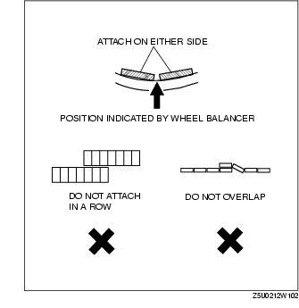
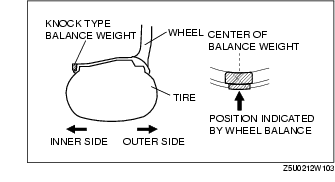

Wheel balance adjustment (aluminum alloy wheel)
- • Adjust the outer wheel balance first, then the inner wheel balance.
- • Be careful not to scratch the wheels.
Adhesive-type Balance Weight (Outer)
1. Remove the old balance weight from the wheel.
2. Remove the double-sided adhesive tape remaining on the wheel, then clean and degrease the bonding area.
3. Set the wheel on a wheel balancer, measure the amount of imbalance and the position with the mode set for knock-type balance weight.
4. Multiply the amount of unbalance by 1.6 to get the balance weight value.
5. Select a balance weight closest to the weight value and attach the balance weight on the position (outer) indicated by the wheel balancer.

Example calculation of balance weight value
- Indicated amount of unbalance: 23 g {0.81 oz}
- 23 g {0.81 oz}×1.6 = 36.8 g {1.30 oz}
- Selected balance weight value: 35 g {1.24 oz}
- • When selecting a balance weight, select one closest to the calculated value.
- Example: 32.4 g {1.14 oz}= 30 g {1.06 oz}, 32.5 g {1.15 oz}= 35 g {1.24 oz}
- • Use a genuine balance weight or equivalent (steel).
- • When attaching the weight balance, press the balance weight with a force of 25 N {2.5 kgf, 5.5 lbf} per 5 g for 2 seconds or more.
6. If attaching 2 balance weights, position them so that each is on either side of the position indicated by the wheel balancer.

- • Do not attach weight balances in a row.
- • Do not overlap the balance weights.
- • Total weight must not exceed 160 g {5.65 oz}.
Knock-type Balance Weight (Inner)
1. Measure the amount of unbalance with a wheel balancer.
2. Attach a balance weight corresponding to the measured weight value on the position (inner) indicated by the wheel balancer.

- • Do not attach 3 or more balance weights.
- • One balance weight must not exceed 60 g {2.12 oz}, and a total of 2 balance weights must not exceed 100 g {3.53 oz}.
Remaining Amount of Unbalance Confirmation
1. After installing the outer and inner balance weights, operate the wheel balancer again.
2. Confirm that the remaining unbalance does not exceed 14 g {0.49 oz} (outer) or 9 g {0.32 oz} (inner) on either side.
- • If the remaining unbalance exceeds 14 g {0.49 oz} (outer) or 9 g {0.32 oz} (inner), perform wheel balance adjustment again.